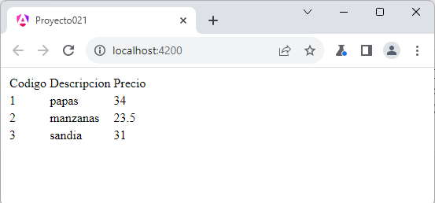

Hemos dicho en el concepto anterior que en Angular se delega todas las responsabilidades de acceso a datos (peticiones y envío de datos) y lógica de negocios en otras clases que colaboran con las componentes y son llamados servicios.
Veremos ahora como recuperar datos de un servidor web implementando dicha actividad en un servicio.
Confeccionar una aplicación que recupere una respuesta en JSON de la dirección:
https://ejerciciostutorialesya.com/vue/datos.php
La estructura del archivo JSON es:
[
{
"codigo": 1,
"descripcion": "papas",
"precio": 12.33
},
{
"codigo": 2,
"descripcion": "manzanas",
"precio": 54
},
{
"codigo": 3,
"descripcion": "sandia",
"precio": 31
}
]
Mostrar en una tabla HTML todos los artículos recuperados.
La recuperación de datos se debe hacer en un servicio.
Desde la línea de comandos de Node.js procedemos a crear el proyecto021:
ng new proyecto021
Crearemos el servicio que recuperará desde un servidor la lista de artículos
ng generate service articulos
Con el comando anterior estamos creando la clase 'ArticulosService'
Se crean dos archivos.
El código generado de la clase 'ArticulosService' es:
import { Injectable } from '@angular/core';
@Injectable({
providedIn: 'root'
})
export class ArticulosService {
constructor() { }
}
Lo modificamos por el siguiente código que permita recuperar desde un servidor web el archivo JSON:
import { Injectable } from '@angular/core';
import { HttpClient } from '@angular/common/http';
@Injectable({
providedIn: 'root'
})
export class ArticulosService {
constructor(private http: HttpClient) { }
retornar() {
return this.http.get("https://ejerciciostutorialesya.com/vue/datos.php");
}
}
Debemos ahora modificar el archivo 'app.config.ts' para poder utilizar la función provideHttpClient:
import { ApplicationConfig, provideZoneChangeDetection } from '@angular/core';
import { provideRouter } from '@angular/router';
import { routes } from './app.routes';
import { provideHttpClient } from '@angular/common/http';
import { withFetch } from '@angular/common/http';
export const appConfig: ApplicationConfig = {
providers: [provideZoneChangeDetection({ eventCoalescing: true }), provideRouter(routes), provideHttpClient(withFetch())]
};
Ahora veremos como consumimos el servicio desde nuestra componente. Procedemos a modificar la componente que se crea por defecto 'AppComponent' que tiene por responsabilidad mostrar en la página el listado de artículos:
import { Component } from '@angular/core';
import { RouterOutlet } from '@angular/router';
import { ArticulosService } from './articulos.service';
@Component({
selector: 'app-root',
imports: [RouterOutlet],
templateUrl: './app.component.html',
styleUrls: ['./app.component.css']
})
export class AppComponent {
articulos: any;
constructor(private articulosService: ArticulosService) {
this.articulosService.retornar()
.subscribe(result => this.articulos = result)
}
}
Primero importamos el servicio llamado ArticulosService que se almacena en el archivo 'articulos.service.ts':
import { ArticulosService } from './articulos.service';
Para inyectar el objeto de la clase 'ArticulosService' que crea Angular en forma automática lo hacemos en el parámetro del constructor:
constructor(private articulosService: ArticulosService) {
this.articulosService.retornar()
.subscribe(result => this.articulos = result)
}
Se almacena en el atributo 'articulosServicio' la referencia del objeto de la clase 'ArticulosService' que crea Angular.
Esta asignación dispara la actualización de la página HTML.
Falta que codifiquemos la vista con los datos recuperados:
app.component.html
<table>
<tr>
<td>Codigo</td><td>Descripcion</td><td>Precio</td>
</tr>
@for(art of articulos;track art.codigo) {
<tr>
<td>{{art.codigo}}</td>
<td>{{art.descripcion}}</td>
<td>{{art.precio}}</td>
</tr>
}
</table>
<router-outlet />
Si ejecutamos ahora el proyecto021 veremos en el navegador el listado de artículos, pero ahora recuperados de un servidor y no extraidos de un vector como en el concepto anterior:
ng server -o
Podemos probar esta aplicación en la web aquí.